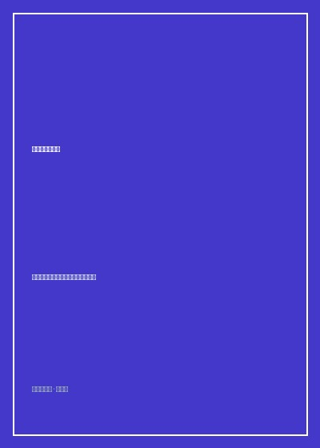

给理想一点时间

总体观点
在二十一世纪初中国经济高速腾飞却伴随着剧烈阶层分化、价值迷茫与精神浮躁的转型十字路口，《给理想一点时间》如同一声沉稳而温和的钟鸣，激荡起无数青年知识分子的心灵共鸣。全书由凤凰网博报精选数十位当代华语思想界最具代表性的学者、作家、媒体人与独立观察家的心血之作。
全书摒弃了极端的激愤谩骂与虚浮的道德说教，以深沉的理性、对底层的真挚悲悯与对现代法治公民社会的坚定守望为主线。作者们在字里行间为转型期的时代阵痛把脉，记录拆迁瓦砾下的平民眼泪、历史风尘中被遮蔽的记忆，以及个体面对庞大体制狂澜时的尊严守候。它向世人发出深情的呼唤：无论外部世界多么喧嚣功利，给理想一点时间，给正义一点耐心，用脚踏实地的微小行动筑牢社会的常识底线。
核心观点
-
1. 守卫常识与理性：抵御群情汹涌的民粹狂欢
在网络舆论情绪化、两极化的年代，知识分子的天职是保持独立清醒，拒绝迎合狂热偏见，坚守基于法理与常识的平视立场。
梁文道在评论公共热点事件时指出，真正的公民精神不是挥舞道德大棒进行人肉审判，而是在程序正义与法律框架内审慎倾听各方陈述。 -
2. 抵抗遗忘：为被宏大叙事淹没的卑微草根树碑立传
历史不应仅仅是帝王将相的功名录，普通人在时代车轮碾压下的苦难与坚韧，同样构成了民族精神最真实的基石。
野夫以泣血之笔记录乡土长辈与流浪民间艺人的沧桑际遇，用带有体温的文字为那些在政治风暴中默默逝去的无名死者招魂。 -
3. 公民社会的基石：从身边力所能及的微小正义做起
改变社会不靠高高在上的宏大口号，而靠千千万万普通人在各自岗位上不作恶、说真话、捍卫合法权利的日拱一卒。
闾丘露薇呼吁公众关注身边的无障碍通道建设与农民工子女入学待遇，在具体的民生权利推进中培育公民社会的有机土壤。 -
4. 给理想一点时间：在漫长的历史长河中葆有战略耐心
文明的进步与法治的成熟从来不是一蹴而就的暴烈狂想，必须做好打持久战的准备，在坎坷倒退中保持内心的清澈火种。
连岳勉励青年不要因现实的残酷而迅速滑入犬儒主义与虚无泥潭，只要每天多读一本好书、多做好一件实事，时间终会站在光明一边。 -
5. 在物质丰裕时代守护精神高贵的自由灵魂
金钱与房子可以带来物质保障，但无法换来灵魂的平静自足；唯有保有对真理、美与爱的向往，生命才不至沦为空洞的皮囊。
文集中多位学者共同反思消费主义对青年一代志趣的阉割，呼吁大学生走出考公考编的单一焦虑，去追寻广阔的人生可能性。
全书思维导图 · 知识脉络树
全书结构
-
第一辑 时代与良知：知识分子的道义守候
收录对公共政策、法治建设与舆论生态的犀利评述，呼唤社会各界守住做人的基本底线。
精读《常识的力量》《在喧嚣中倾听沉默》，体味理性批评对于推动社会反思进步的不可或缺价值。 -
第二辑 个体与尊严：平民权利的微光汇聚
聚焦弱势群体、下岗职工、留守儿童与拆迁农户的真实生存处境，探讨法律援助与权利保护。
在《一个老工人的暮年自白》中直击转型期底层民众的生存痛感，唤起全社会对社会保障托底的深切关切。 -
第三辑 历史与记忆：打捞风尘中的记忆残卷
深入二十世纪风云跌宕的家族与地方史切片，以非虚构笔调复活被官方正史略去的民间记忆。
阅读野夫等作家对动荡岁月中家族亲历者的深情悼亡，展现人性在极端历史风暴中的不屈光辉。 -
第四辑 给理想一点时间：向光而行的远方长歌
全书压轴篇章，汇聚对青年成长、文化传承与国家未来的温情勉励，为疲惫的心灵注入坚定的希望力量。
通读同名终篇《给理想一点时间》，在温润从容的文人风骨中，重新找回与不完美世界并肩前行的坚定勇气。